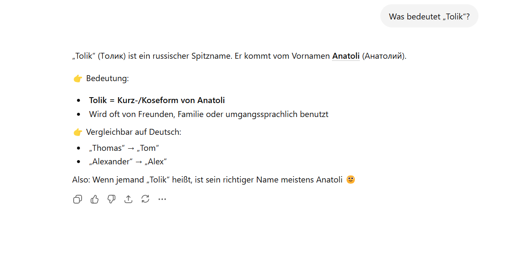
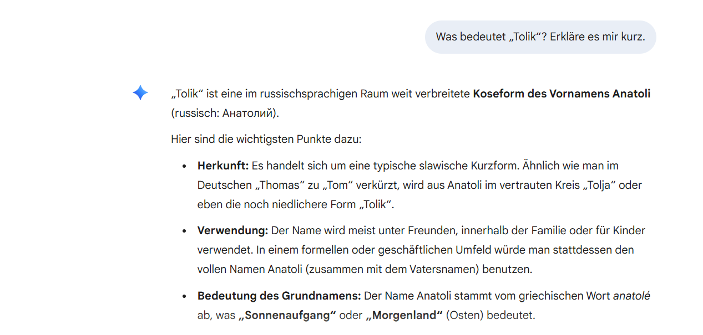
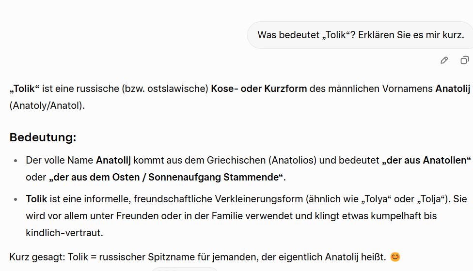

Was bedeutet Tolik?
Tolik (aus dem Russischen „Толик“) ist eine kurze und freundliche Form von dem Namen Anatoli. Man benutzt solche Namen oft in der Familie oder mit Freunden.
Herkunft
Der Name Anatoli kommt aus dem Griechischen und bedeutet „Sonnenaufgang“ oder „Osten“. Später wurde daraus die Form „Tolik“.
Warum ist er populär?
Der Name ist besonders in russischsprachigen Ländern sehr bekannt. Man benutzt ihn nicht nur als Namen, sondern auch manchmal als Witz.
Unser Held
Unser Held David hat diesen zweiten Namen nicht ohne Grund bekommen, sondern wegen seines scharfen Verstandes, seines kritischen Denkens, seines kreativen Humors, seiner Arbeitsbereitschaft, seiner Ehrlichkeit und vor allem seiner Freundlichkeit.
Nachweisen
Ich habe 3 KIs gefragt, was „Tolik“ bedeutet.
GhatGPT:
Gemini:
Grok: